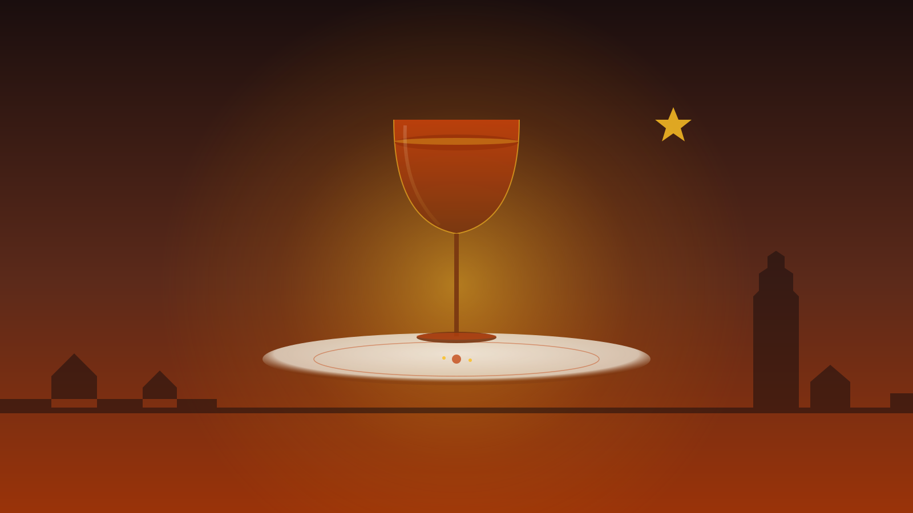
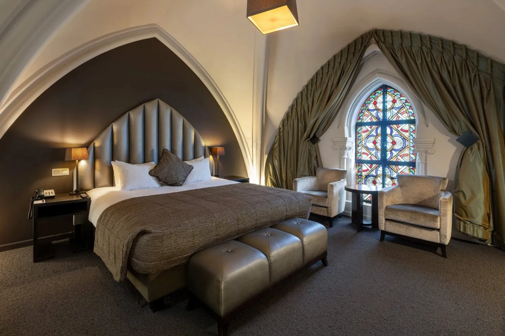
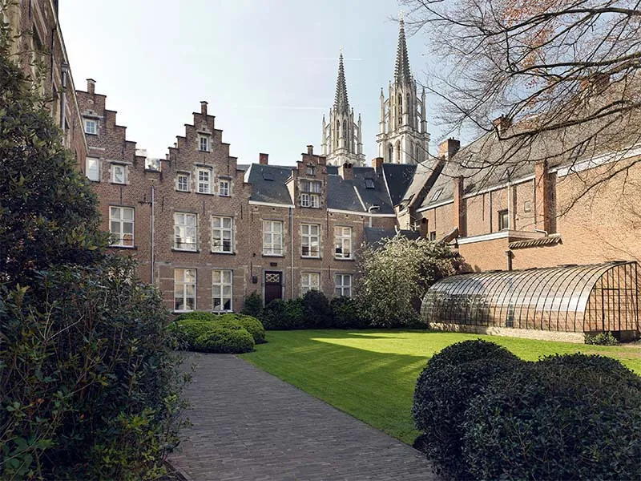
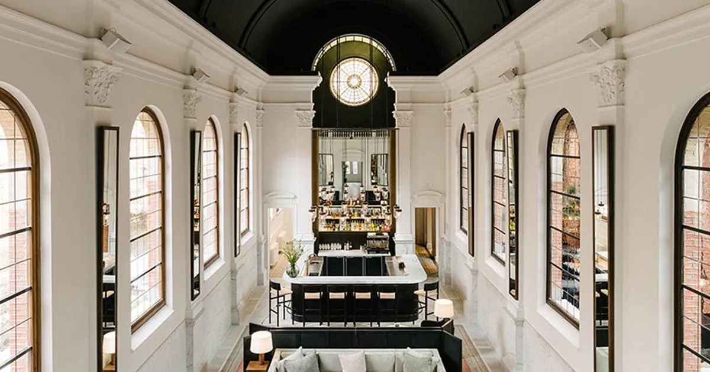
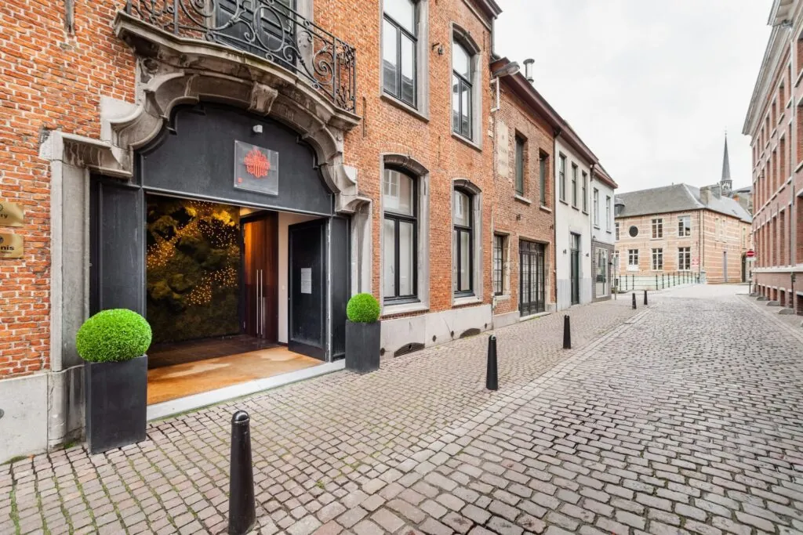
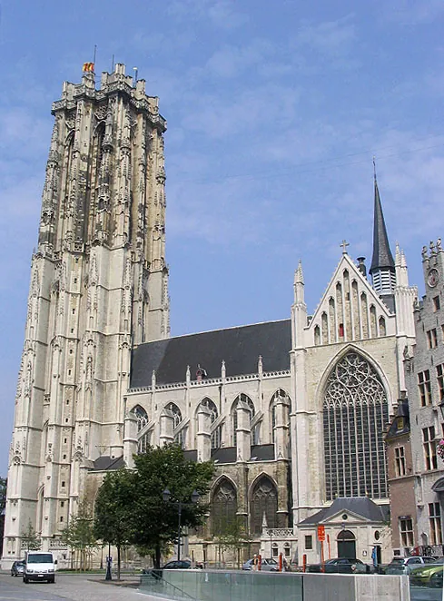
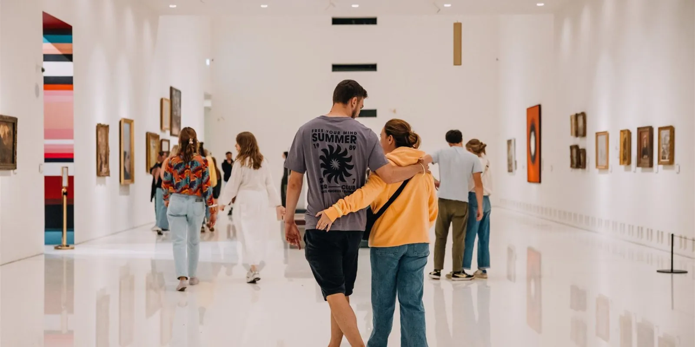
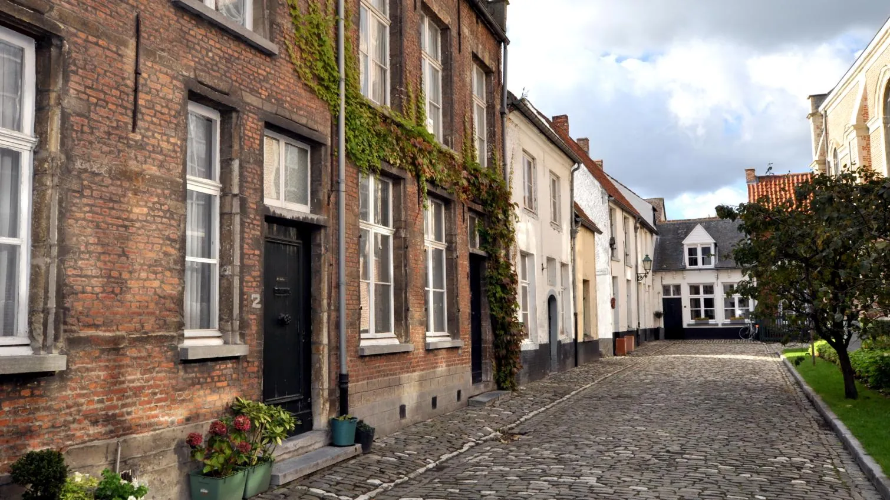

<style>
  .dossier * { box-sizing: border-box; }
  .dossier {
    --paper:       #f1ebde;
    --paper-warm:  #ebe2cd;
    --paper-deep:  #ddd0b3;
    --vellum:      #f7f2e6;
    --ink:         #1a1814;
    --ink-soft:    #3a342a;
    --ink-faint:   #6c6450;
    --ink-pale:    #968d76;
    --rule:        #b8a984;
    --rule-soft:   #d6c9a6;
    --forest:      #2a3b2c;
    --forest-deep: #1a2a1c;
    --foil:        #8c6e2c;
    --foil-bright: #b78c38;
    --burgundy:    #6b1f1c;
    --burgundy-br: #8f2826;
    background: var(--paper);
    color: var(--ink);
    font-family: 'EB Garamond', 'Cormorant Garamond', Georgia, serif;
    font-size: 17px;
    line-height: 1.55;
    margin: 0;
    padding: 0;
    background-image:
      repeating-linear-gradient(0deg, transparent 0, transparent 3px, rgba(100,80,40,0.022) 3px, rgba(100,80,40,0.022) 4px),
      radial-gradient(ellipse at 15% 5%, rgba(160,130,70,0.05) 0%, transparent 55%),
      radial-gradient(ellipse at 85% 95%, rgba(160,130,70,0.05) 0%, transparent 55%);
  }
  .dossier .display { font-family: 'Playfair Display', 'DM Serif Display', Georgia, serif; }
  .dossier .mono { font-family: 'JetBrains Mono', ui-monospace, Menlo, monospace; }
  .dossier .sans { font-family: 'Inter', -apple-system, system-ui, sans-serif; }
  .dossier a { color: var(--burgundy); text-decoration: none; border-bottom: 1px dotted var(--burgundy); }
  .dossier a:hover { color: var(--foil-bright); border-bottom-color: var(--foil-bright); }
  .dossier sup a { border-bottom: none; font-size: 0.66em; padding: 0 1px; color: var(--foil); vertical-align: super; }
  .dossier sup a:hover { color: var(--burgundy); }

  /* ─── COVER ─────────────────────────────────────────────── */
  .dossier .cover {
    padding: 64px 56px 48px;
    background: var(--paper-warm);
    border-bottom: 3px double var(--rule);
    position: relative;
  }
  .dossier .masthead {
    display: flex;
    justify-content: space-between;
    align-items: flex-end;
    padding-bottom: 14px;
    border-bottom: 1px solid var(--rule);
    font-family: 'JetBrains Mono', monospace;
    font-size: 10px;
    letter-spacing: 0.26em;
    color: var(--ink-faint);
    text-transform: uppercase;
    margin-bottom: 36px;
  }
  .dossier .masthead .mh-left span:first-child { color: var(--burgundy); font-weight: 700; }
  .dossier .masthead .mh-right { text-align: right; }
  .dossier .cover-grid {
    display: grid;
    grid-template-columns: 1.15fr 1fr;
    gap: 44px;
    align-items: end;
  }
  .dossier .cover-text .filing {
    font-family: 'JetBrains Mono', monospace;
    font-size: 10px;
    letter-spacing: 0.22em;
    color: var(--ink-pale);
    text-transform: uppercase;
    margin-bottom: 16px;
  }
  .dossier .cover-text .filing .sep { color: var(--rule); margin: 0 8px; }
  .dossier .cover h1 {
    font-family: 'Playfair Display', Georgia, serif;
    font-weight: 400;
    font-size: 64px;
    line-height: 0.98;
    margin: 0 0 18px;
    letter-spacing: -0.015em;
  }
  .dossier .cover h1 .em {
    font-style: italic;
    color: var(--burgundy);
  }
  .dossier .cover .lede {
    font-family: 'EB Garamond', Georgia, serif;
    font-size: 19px;
    line-height: 1.5;
    color: var(--ink-soft);
    margin: 0 0 22px;
    font-style: italic;
    max-width: 56ch;
  }
  .dossier .cover .kicker-row {
    display: flex;
    gap: 26px;
    align-items: baseline;
    font-family: 'JetBrains Mono', monospace;
    font-size: 10.5px;
    letter-spacing: 0.18em;
    color: var(--ink-faint);
    text-transform: uppercase;
    border-top: 1px solid var(--rule-soft);
    padding-top: 14px;
  }
  .dossier .cover .kicker-row b {
    color: var(--ink);
    font-size: 18px;
    font-family: 'Playfair Display', Georgia, serif;
    font-weight: 600;
    letter-spacing: 0;
    margin-right: 6px;
    text-transform: none;
  }
  .dossier .cover-photo {
    aspect-ratio: 4 / 5;
    overflow: hidden;
    border: 1px solid var(--rule);
    box-shadow: 0 2px 0 var(--rule-soft), 0 20px 40px -25px rgba(0,0,0,0.4);
    position: relative;
  }
  .dossier .cover-photo img {
    width: 100%; height: 100%;
    object-fit: cover;
    display: block;
  }
  .dossier .cover-photo .caption {
    position: absolute;
    bottom: 0; left: 0; right: 0;
    background: linear-gradient(to top, rgba(0,0,0,0.7), transparent);
    color: var(--vellum);
    padding: 28px 20px 14px;
    font-family: 'JetBrains Mono', monospace;
    font-size: 9.5px;
    letter-spacing: 0.22em;
    text-transform: uppercase;
  }
  .dossier .cover-photo .caption b { font-family: 'Playfair Display', serif; font-style: italic; font-size: 13px; letter-spacing: 0; text-transform: none; display: block; margin-bottom: 4px; color: var(--paper); }

  /* ─── CONSTRAINT BAND ───────────────────────────────────── */
  .dossier .constraint {
    background: var(--forest);
    color: var(--vellum);
    padding: 32px 56px;
    display: grid;
    grid-template-columns: auto 1fr auto;
    gap: 36px;
    align-items: center;
    border-bottom: 1px solid var(--forest-deep);
  }
  .dossier .constraint .stamp {
    font-family: 'JetBrains Mono', monospace;
    font-size: 9.5px;
    letter-spacing: 0.3em;
    text-transform: uppercase;
    border: 1.5px solid var(--foil-bright);
    color: var(--foil-bright);
    padding: 8px 14px 6px;
    transform: rotate(-2deg);
  }
  .dossier .constraint .verdict {
    font-family: 'Playfair Display', Georgia, serif;
    font-size: 26px;
    font-style: italic;
    line-height: 1.25;
    margin: 0;
    color: var(--vellum);
  }
  .dossier .constraint .verdict b { font-style: normal; color: var(--foil-bright); }
  .dossier .constraint .nums {
    display: flex;
    gap: 22px;
  }
  .dossier .constraint .num {
    text-align: center;
    min-width: 64px;
  }
  .dossier .constraint .num .n {
    font-family: 'Playfair Display', Georgia, serif;
    font-size: 36px;
    line-height: 1;
    color: var(--foil-bright);
    display: block;
  }
  .dossier .constraint .num .lbl {
    font-family: 'JetBrains Mono', monospace;
    font-size: 8.5px;
    letter-spacing: 0.22em;
    text-transform: uppercase;
    color: var(--vellum);
    opacity: 0.7;
    margin-top: 4px;
    display: block;
  }

  /* ─── SECTION SHELL ─────────────────────────────────────── */
  .dossier .section {
    padding: 56px 56px 12px;
  }
  .dossier .section-head {
    display: grid;
    grid-template-columns: auto 1fr auto;
    align-items: center;
    gap: 18px;
    margin-bottom: 28px;
  }
  .dossier .section-head .roman {
    font-family: 'Playfair Display', Georgia, serif;
    font-style: italic;
    font-size: 32px;
    color: var(--foil);
    line-height: 1;
  }
  .dossier .section-head h2 {
    font-family: 'Playfair Display', Georgia, serif;
    font-size: 30px;
    font-weight: 400;
    margin: 0;
    color: var(--ink);
    letter-spacing: -0.01em;
  }
  .dossier .section-head .ann {
    font-family: 'JetBrains Mono', monospace;
    font-size: 9.5px;
    letter-spacing: 0.2em;
    text-transform: uppercase;
    color: var(--ink-pale);
    text-align: right;
  }
  .dossier .section-head .ann b { color: var(--burgundy); font-family: 'Playfair Display', serif; font-size: 16px; font-weight: 600; letter-spacing: 0; text-transform: none; }
  .dossier .section-head::before,
  .dossier .section-head::after { display: none; }
  .dossier .rule { border: 0; border-top: 1px solid var(--rule); margin: 18px 0 24px; }
  .dossier .rule-d { border: 0; border-top: 3px double var(--rule); margin: 30px 0; }

  /* ─── THE SPINE (Fri/Sat/Sun timeline) ─────────────────── */
  .dossier .spine {
    display: grid;
    grid-template-columns: 110px 1fr;
    gap: 0;
    margin-top: 8px;
  }
  .dossier .spine .day {
    border-top: 1px solid var(--rule);
    padding: 24px 0 30px;
    position: relative;
  }
  .dossier .spine .day:last-child { border-bottom: 1px solid var(--rule); }
  .dossier .spine .day-marker {
    border-right: 1px solid var(--rule);
    padding-right: 18px;
    text-align: right;
    position: sticky;
    top: 0;
  }
  .dossier .spine .day-marker .dow {
    font-family: 'Playfair Display', Georgia, serif;
    font-style: italic;
    font-size: 30px;
    color: var(--ink);
    line-height: 1;
    display: block;
  }
  .dossier .spine .day-marker .date {
    font-family: 'JetBrains Mono', monospace;
    font-size: 9px;
    letter-spacing: 0.22em;
    text-transform: uppercase;
    color: var(--ink-pale);
    margin-top: 6px;
    display: block;
  }
  .dossier .spine .day-marker .badge {
    margin-top: 10px;
    font-family: 'JetBrains Mono', monospace;
    font-size: 8.5px;
    letter-spacing: 0.18em;
    text-transform: uppercase;
    display: inline-block;
    padding: 3px 8px;
    background: var(--paper-deep);
    color: var(--ink-soft);
  }
  .dossier .spine .day-marker .badge.peak { background: var(--burgundy); color: var(--vellum); }
  .dossier .spine .day-body { padding-left: 22px; }
  .dossier .spine .slot {
    margin-bottom: 18px;
    display: grid;
    grid-template-columns: 64px 1fr;
    gap: 14px;
    align-items: baseline;
  }
  .dossier .spine .slot:last-child { margin-bottom: 0; }
  .dossier .spine .slot .time {
    font-family: 'JetBrains Mono', monospace;
    font-size: 11px;
    color: var(--foil);
    letter-spacing: 0.1em;
    padding-top: 3px;
  }
  .dossier .spine .slot .what {
    font-family: 'EB Garamond', Georgia, serif;
    font-size: 17px;
    line-height: 1.5;
    color: var(--ink-soft);
  }
  .dossier .spine .slot .what b { color: var(--ink); font-weight: 600; }
  .dossier .spine .slot .what .ital { font-style: italic; color: var(--ink-faint); }

  /* ─── LODGING TIERS ─────────────────────────────────────── */
  .dossier .tier {
    margin-bottom: 28px;
  }
  .dossier .tier-head {
    display: grid;
    grid-template-columns: 90px 1fr auto;
    align-items: baseline;
    gap: 18px;
    padding-bottom: 8px;
    border-bottom: 1px solid var(--rule-soft);
    margin-bottom: 16px;
  }
  .dossier .tier-head .badge {
    font-family: 'JetBrains Mono', monospace;
    font-size: 9.5px;
    letter-spacing: 0.22em;
    text-transform: uppercase;
    color: var(--paper);
    background: var(--forest);
    padding: 5px 8px 4px;
    text-align: center;
  }
  .dossier .tier-head h3 {
    font-family: 'Playfair Display', Georgia, serif;
    font-size: 22px;
    font-weight: 400;
    margin: 0;
    font-style: italic;
    color: var(--ink);
  }
  .dossier .tier-head .verdict {
    font-family: 'EB Garamond', Georgia, serif;
    font-size: 14px;
    color: var(--ink-faint);
    font-style: italic;
    text-align: right;
    max-width: 32ch;
  }
  .dossier .lodge-grid {
    display: grid;
    grid-template-columns: repeat(3, 1fr);
    gap: 22px;
  }
  .dossier .lodge {
    background: var(--vellum);
    border: 1px solid var(--rule-soft);
  }
  .dossier .lodge .lphoto {
    aspect-ratio: 4/3;
    overflow: hidden;
    background: var(--paper-deep);
    position: relative;
  }
  .dossier .lodge .lphoto img {
    width: 100%; height: 100%; object-fit: cover; display: block;
  }
  .dossier .lodge .lphoto.gradient {
    display: flex; align-items: flex-end; padding: 16px;
    color: var(--vellum);
    font-family: 'Playfair Display', serif;
    font-style: italic;
    font-size: 22px;
    line-height: 1.05;
  }
  .dossier .lodge .lphoto .city-tag {
    position: absolute; top: 10px; left: 10px;
    font-family: 'JetBrains Mono', monospace;
    font-size: 8.5px; letter-spacing: 0.22em; text-transform: uppercase;
    background: rgba(247,242,230,0.92); color: var(--ink);
    padding: 4px 8px 3px;
  }
  .dossier .lodge .lbody {
    padding: 16px 18px 18px;
  }
  .dossier .lodge .lbody h4 {
    font-family: 'Playfair Display', Georgia, serif;
    font-size: 19px;
    font-weight: 500;
    margin: 0 0 4px;
    line-height: 1.2;
  }
  .dossier .lodge .lbody .what {
    font-family: 'EB Garamond', Georgia, serif;
    font-size: 14.5px;
    line-height: 1.5;
    color: var(--ink-soft);
    margin: 6px 0 12px;
  }
  .dossier .lodge .specs {
    display: flex;
    flex-wrap: wrap;
    gap: 8px 14px;
    font-family: 'JetBrains Mono', monospace;
    font-size: 9.5px;
    letter-spacing: 0.12em;
    text-transform: uppercase;
    color: var(--ink-faint);
    border-top: 1px dotted var(--rule);
    padding-top: 10px;
  }
  .dossier .lodge .specs b { color: var(--ink); font-family: 'Playfair Display', serif; font-size: 12.5px; font-weight: 600; letter-spacing: 0; text-transform: none; }

  /* ─── DAY-TRIP RIBBON ───────────────────────────────────── */
  .dossier .triptych {
    display: grid;
    grid-template-columns: repeat(3, 1fr);
    gap: 24px;
  }
  .dossier .city {
    border: 1px solid var(--rule-soft);
    background: var(--vellum);
  }
  .dossier .city .cphoto { aspect-ratio: 16/10; overflow: hidden; }
  .dossier .city .cphoto img { width: 100%; height: 100%; object-fit: cover; display: block; }
  .dossier .city .cbody { padding: 18px 20px 20px; }
  .dossier .city .ctop {
    display: flex; justify-content: space-between; align-items: baseline;
    border-bottom: 1px dotted var(--rule);
    padding-bottom: 10px; margin-bottom: 12px;
  }
  .dossier .city h3 {
    font-family: 'Playfair Display', Georgia, serif;
    font-style: italic;
    font-size: 26px;
    font-weight: 500;
    margin: 0;
    color: var(--ink);
  }
  .dossier .city .ride {
    font-family: 'JetBrains Mono', monospace;
    font-size: 10px;
    letter-spacing: 0.18em;
    text-transform: uppercase;
    color: var(--foil);
    text-align: right;
  }
  .dossier .city .ride b {
    display: block;
    font-family: 'Playfair Display', serif;
    font-size: 18px;
    color: var(--ink);
    font-weight: 600;
    letter-spacing: 0;
    text-transform: none;
  }
  .dossier .city .pulls {
    font-family: 'EB Garamond', Georgia, serif;
    font-size: 14.5px;
    line-height: 1.55;
    color: var(--ink-soft);
    margin: 0;
    padding: 0;
    list-style: none;
  }
  .dossier .city .pulls li {
    padding: 5px 0;
    border-bottom: 1px dotted var(--rule-soft);
  }
  .dossier .city .pulls li:last-child { border-bottom: 0; }
  .dossier .city .pulls li .place { font-family: 'Playfair Display', serif; font-style: italic; color: var(--ink); }

  /* ─── CALENDAR TRAP ─────────────────────────────────────── */
  .dossier .rhythm {
    background: var(--paper-warm);
    padding: 30px 36px;
    border: 1px solid var(--rule-soft);
    margin-top: 12px;
    display: grid;
    grid-template-columns: 1fr 1fr;
    gap: 36px;
  }
  .dossier .rhythm .col h4 {
    font-family: 'Playfair Display', Georgia, serif;
    font-style: italic;
    font-size: 22px;
    font-weight: 500;
    margin: 0 0 12px;
    color: var(--ink);
    border-bottom: 1px dotted var(--rule);
    padding-bottom: 8px;
  }
  .dossier .rhythm .col h4 .dot {
    display: inline-block;
    width: 10px; height: 10px;
    border-radius: 50%;
    margin-right: 8px;
    vertical-align: middle;
  }
  .dossier .rhythm .col .open { background: var(--forest); }
  .dossier .rhythm .col .shut { background: var(--burgundy); }
  .dossier .rhythm ul {
    list-style: none;
    margin: 0; padding: 0;
    font-family: 'EB Garamond', Georgia, serif;
    font-size: 15px;
    line-height: 1.65;
    color: var(--ink-soft);
  }
  .dossier .rhythm ul li { padding: 4px 0; }
  .dossier .rhythm ul li .label { font-family: 'Playfair Display', serif; font-style: italic; color: var(--ink); margin-right: 6px; }
  .dossier .trap {
    margin-top: 18px;
    padding: 14px 18px;
    background: var(--burgundy);
    color: var(--vellum);
    font-family: 'EB Garamond', Georgia, serif;
    font-size: 15px;
    line-height: 1.5;
    font-style: italic;
  }
  .dossier .trap b { color: var(--foil-bright); font-style: normal; font-family: 'JetBrains Mono', monospace; font-size: 11px; letter-spacing: 0.2em; text-transform: uppercase; margin-right: 8px; }
  .dossier .trap a { color: var(--foil-bright); border-bottom-color: var(--foil-bright); }
  .dossier .trap a:hover { color: var(--vellum); border-bottom-color: var(--vellum); }
  .dossier .trap sup a { color: var(--foil-bright); }

  /* ─── CONFERENCE BUNDLE ─────────────────────────────────── */
  .dossier .conf-rail {
    display: grid;
    grid-template-columns: repeat(4, 1fr);
    gap: 18px;
  }
  .dossier .conf {
    border: 1px solid var(--rule-soft);
    background: var(--vellum);
    padding: 18px 16px 16px;
    display: flex;
    flex-direction: column;
  }
  .dossier .conf .when {
    font-family: 'JetBrains Mono', monospace;
    font-size: 9.5px;
    letter-spacing: 0.2em;
    text-transform: uppercase;
    color: var(--burgundy);
    border-bottom: 1px solid var(--rule);
    padding-bottom: 8px;
    margin-bottom: 10px;
  }
  .dossier .conf .sat {
    font-family: 'Playfair Display', Georgia, serif;
    font-style: italic;
    font-size: 28px;
    font-weight: 500;
    color: var(--ink);
    line-height: 1;
    margin-bottom: 14px;
  }
  .dossier .conf .sat .sm { font-size: 14px; font-style: normal; color: var(--ink-faint); display: block; margin-top: 2px; letter-spacing: 0.02em; }
  .dossier .conf .ev {
    font-family: 'EB Garamond', Georgia, serif;
    font-size: 14.5px;
    line-height: 1.5;
    color: var(--ink-soft);
    flex: 1;
  }
  .dossier .conf .ev p { margin: 0 0 8px; }
  .dossier .conf .ev .name { font-family: 'Playfair Display', serif; font-style: italic; color: var(--ink); }
  .dossier .conf .note {
    font-family: 'JetBrains Mono', monospace;
    font-size: 9.5px;
    letter-spacing: 0.18em;
    text-transform: uppercase;
    color: var(--foil);
    margin-top: 12px;
    padding-top: 10px;
    border-top: 1px dotted var(--rule);
  }
  .dossier .conf.flag .when { color: var(--foil-bright); }
  .dossier .conf.flag { background: var(--forest); color: var(--vellum); border-color: var(--forest-deep); }
  .dossier .conf.flag .sat, .dossier .conf.flag .ev, .dossier .conf.flag .ev .name { color: var(--vellum); }
  .dossier .conf.flag .sat .sm { color: var(--foil-bright); }
  .dossier .conf.flag .when { border-bottom-color: var(--foil); color: var(--foil-bright); }
  .dossier .conf.flag .note { color: var(--foil-bright); border-top-color: var(--foil); }
  .dossier .conf.flag a { color: var(--foil-bright); border-bottom-color: var(--foil-bright); }
  .dossier .conf.flag sup a { color: var(--foil-bright); }

  /* ─── PHONE CARD ───────────────────────────────────────── */
  .dossier .phonecard {
    margin: 36px 0 0;
    background: var(--paper-warm);
    border: 1.5px solid var(--burgundy);
    padding: 28px 32px;
    display: grid;
    grid-template-columns: auto 1fr;
    gap: 28px;
    align-items: center;
  }
  .dossier .phonecard .ico {
    font-family: 'Playfair Display', serif;
    font-size: 64px;
    line-height: 1;
    color: var(--burgundy);
    font-style: italic;
  }
  .dossier .phonecard h3 {
    font-family: 'Playfair Display', Georgia, serif;
    font-size: 24px;
    font-weight: 500;
    margin: 0 0 6px;
    color: var(--ink);
    font-style: italic;
  }
  .dossier .phonecard p {
    margin: 0 0 10px;
    font-size: 15.5px;
    color: var(--ink-soft);
  }
  .dossier .phonecard .digits {
    font-family: 'Playfair Display', Georgia, serif;
    font-size: 24px;
    color: var(--burgundy);
    letter-spacing: 0.04em;
  }

  /* ─── COLOPHON ─────────────────────────────────────────── */
  .dossier .colophon {
    margin-top: 56px;
    padding: 32px 56px 56px;
    background: var(--forest);
    color: var(--vellum);
  }
  .dossier .colophon .top {
    display: grid;
    grid-template-columns: 1fr auto;
    align-items: baseline;
    border-bottom: 1px solid var(--foil);
    padding-bottom: 14px;
    margin-bottom: 18px;
  }
  .dossier .colophon h3 {
    font-family: 'Playfair Display', Georgia, serif;
    font-style: italic;
    font-size: 22px;
    margin: 0;
    color: var(--vellum);
  }
  .dossier .colophon .meta {
    font-family: 'JetBrains Mono', monospace;
    font-size: 9.5px;
    letter-spacing: 0.22em;
    text-transform: uppercase;
    color: var(--foil-bright);
  }
  .dossier .colophon .child-grid {
    display: grid;
    grid-template-columns: repeat(2, 1fr);
    gap: 16px;
  }
  .dossier .colophon .child {
    border: 1px solid var(--foil);
    padding: 14px 18px;
  }
  .dossier .colophon .child .depth {
    font-family: 'JetBrains Mono', monospace;
    font-size: 9px;
    letter-spacing: 0.22em;
    text-transform: uppercase;
    color: var(--foil-bright);
    margin-bottom: 6px;
  }
  .dossier .colophon .child a {
    font-family: 'Playfair Display', Georgia, serif;
    font-style: italic;
    font-size: 17px;
    color: var(--vellum);
    border-bottom-color: var(--foil);
    display: block;
    margin-bottom: 4px;
  }
  .dossier .colophon .child a:hover { color: var(--foil-bright); border-bottom-color: var(--foil-bright); }
  .dossier .colophon .child p {
    margin: 4px 0 0;
    font-size: 13.5px;
    line-height: 1.4;
    color: var(--paper-deep);
  }
  .dossier .colophon .sig {
    margin-top: 22px;
    padding-top: 14px;
    border-top: 1px dotted var(--foil);
    font-family: 'JetBrains Mono', monospace;
    font-size: 9.5px;
    letter-spacing: 0.22em;
    text-transform: uppercase;
    color: var(--foil-bright);
    display: flex;
    justify-content: space-between;
  }
  .dossier .colophon .sig a { color: var(--foil-bright); border-bottom-color: var(--foil); }

  @media (max-width: 880px) {
    .dossier .cover-grid { grid-template-columns: 1fr; }
    .dossier .cover h1 { font-size: 44px; }
    .dossier .constraint { grid-template-columns: 1fr; gap: 18px; padding: 24px 28px; }
    .dossier .constraint .verdict { font-size: 20px; }
    .dossier .section { padding: 36px 28px 8px; }
    .dossier .spine { grid-template-columns: 80px 1fr; }
    .dossier .lodge-grid, .dossier .triptych, .dossier .conf-rail { grid-template-columns: 1fr; }
    .dossier .rhythm { grid-template-columns: 1fr; padding: 20px; }
    .dossier .colophon { padding: 28px; }
    .dossier .colophon .child-grid { grid-template-columns: 1fr; }
  }
</style>

<article class="dossier">

  <!-- ─────────── COVER ─────────── -->
  <section class="cover">
    <div class="masthead">
      <div class="mh-left"><span>Atlas Dossier</span> &nbsp;·&nbsp; <span>No. 25–05</span></div>
      <div class="mh-right">Duffel · Mechelen · Antwerp · Lier</div>
    </div>

    <div class="cover-grid">
      <div class="cover-text">
        <div class="filing">Filed 2026·05·25<span class="sep">·</span>174 citations<span class="sep">·</span>32-min read<span class="sep">·</span>Expedition</div>
        <h1>A weekend pinned to <span class="em">a two-star table</span>, in a village with no hotel.</h1>
        <p class="lede">Nuance is a 42-cover former bank on a side street in Duffel — a 17,000-person commuter village with zero hotels in its municipality. Every recommendation in this dossier is downstream of that single fact.</p>
        <div class="kicker-row">
          <div><b>★★</b>Michelin</div>
          <div><b>42</b>covers</div>
          <div><b>0</b>Duffel hotels</div>
          <div><b>30</b>km radius</div>
        </div>
      </div>
      <div class="cover-photo">
        
        <div class="caption"><b>Nuance, Duffel</b>Kiliaanstraat 6–8 · Chef Thierry Theys</div>
      </div>
    </div>
  </section>

  <!-- ─────────── THE PIVOTING CONSTRAINT ─────────── -->
  <aside class="constraint">
    <div class="stamp">The Pivot</div>
    <p class="verdict">The dinner pivots everything. <b>Sleep where you most want to wake up</b> — Mechelen, Antwerp, or Lier — and let <a href="https://taxisymforosa.be/taxi/">Taxi Symforosa</a> handle the ride back. <sup><a href="https://resto-nuance.be/en/recommended-hotels-transport/">[3]</a></sup></p>
    <div class="nums">
      <div class="num"><span class="n">42</span><span class="lbl">Covers</span></div>
      <div class="num"><span class="n">0</span><span class="lbl">Hotels</span></div>
      <div class="num"><span class="n">★★</span><span class="lbl">Stars</span></div>
    </div>
  </aside>

  <!-- ─────────── I. THE WEEKEND SPINE ─────────── -->
  <section class="section">
    <header class="section-head">
      <div class="roman">I.</div>
      <h2>The Weekend Spine</h2>
      <div class="ann">A worked example<br><b>Fri → Mon</b></div>
    </header>

    <div class="spine">

      <div class="day-marker day"><span class="dow">Fri</span><span class="date">arrival</span><span class="badge">prologue</span></div>
      <div class="day-body day">
        <div class="slot"><div class="time">17:30</div><div class="what">Train into <b>Antwerpen-Centraal</b> (S1 spine, ~24 min from Duffel; the same line continues to Mechelen). <span class="ital">Check in at your chosen hotel — see §II.</span><sup><a href="https://www.rome2rio.com/Train/Duffel/Antwerpen-Centraal-Station">[6]</a></sup></div></div>
        <div class="slot"><div class="time">19:30</div><div class="what">Aperitif at a Mechelen <b>Vismarkt</b> brown café or an Antwerp Eilandje terrace — anything light. <span class="ital">The kitchen tomorrow is long.</span><sup><a href="https://visit.mechelen.be/vismarkt-13">[33]</a></sup></div></div>
      </div>

      <div class="day-marker day"><span class="dow">Sat</span><span class="date">the dinner</span><span class="badge peak">peak</span></div>
      <div class="day-body day">
        <div class="slot"><div class="time">10:00</div><div class="what">Slow morning. If staying in Mechelen, the <b>St. Rumbold's Skywalk</b> (538 steps, €8 adult) opens at 10:00 on Saturdays — the best 97 m view in the region.<sup><a href="https://visit.mechelen.be/ascent-of-st-rumbolds-tower">[9]</a></sup></div></div>
        <div class="slot"><div class="time">12:30</div><div class="what"><b>Light lunch.</b> Saturday Exotische Markt on Theaterplein in Antwerp (08:00–16:00), or the Mechelen Saturday market on Grote Markt (08:00–13:00). <span class="ital">Save the appetite.</span></div></div>
        <div class="slot"><div class="time">16:00</div><div class="what">Back to the hotel. Confirm the <b>Taxi Symforosa</b> pickup window with reception. €3.50 dispatch + per-km; €3 surcharge after 22:00.<sup><a href="https://taxisymforosa.be/taxi/">[25]</a></sup></div></div>
        <div class="slot"><div class="time">19:00</div><div class="what">Taxi to <b>Kiliaanstraat 6–8</b>. <a href="https://guide.michelin.com/en/antwerpen/duffel/restaurant/nuance">Nuance</a> — two stars, Thierry Theys, 42 covers in a former bank.<sup><a href="https://guide.michelin.com/en/antwerpen/duffel/restaurant/nuance">[1]</a></sup></div></div>
        <div class="slot"><div class="time">23:30</div><div class="what">Symforosa back to bed. <span class="ital">No driving. No surprises. That was the whole point.</span></div></div>
      </div>

      <div class="day-marker day"><span class="dow">Sun</span><span class="date">museum day</span><span class="badge">recovery</span></div>
      <div class="day-body day">
        <div class="slot"><div class="time">10:30</div><div class="what">Long breakfast. Shops are shut (Sunday is the museum day, see §IV).<sup><a href="https://www.fedasilinfo.be/en/when-are-shops-open">[16]</a></sup></div></div>
        <div class="slot"><div class="time">12:00</div><div class="what">Sunday museum pivot. <b>From Mechelen:</b> <a href="https://www.hetanker.be/en/events/geniettour">Het Anker</a> brewery Geniettour (1h45, two Gouden Carolus tastings + rooftop). <b>From Antwerp:</b> <a href="https://kmska.be/en/opening-hours-and-tickets">KMSKA</a> + <a href="https://whc.unesco.org/en/list/1185/">Plantin-Moretus</a> (UNESCO; only surviving Renaissance printing workshop in the world).<sup><a href="https://kmska.be/en/opening-hours-and-tickets">[10]</a></sup><sup><a href="https://whc.unesco.org/en/list/1185/">[32]</a></sup></div></div>
        <div class="slot"><div class="time">17:30</div><div class="what">Optional rooftop sundown at <a href="https://mas.be/en/page/how-when-get-here">MAS</a> — galleries close 17:00 but the boulevard and panorama stay open until 22:00, free.<sup><a href="https://mas.be/en/page/how-when-get-here">[31]</a></sup></div></div>
      </div>

      <div class="day-marker day"><span class="dow">Mon</span><span class="date">extension</span><span class="badge">optional</span></div>
      <div class="day-body day">
        <div class="slot"><div class="time">10:00</div><div class="what">Monday flips. Most museums close, the shops open. <b><a href="https://www.divaantwerp.be/en/visit/opening-hours">DIVA</a></b> is the one major Antwerp museum reliably open on Mondays (closed Wednesdays instead).<sup><a href="https://www.divaantwerp.be/en/visit/opening-hours">[13]</a></sup></div></div>
        <div class="slot"><div class="time">14:00</div><div class="what">Train home, or — if §V applies — stay through the work week and bundle a Mon-Fri conference around the trip.</div></div>
      </div>

    </div>
  </section>

  <!-- ─────────── II. WHERE TO SLEEP ─────────── -->
  <section class="section">
    <header class="section-head">
      <div class="roman">II.</div>
      <h2>Where to Sleep</h2>
      <div class="ann">Three tiers, by character<br><b>Mechelen · Antwerp · Lier</b></div>
    </header>

    <div class="tier">
      <div class="tier-head">
        <div class="badge">Tier 1</div>
        <h3>Nuance's own picks — partner hotels with the taxi line</h3>
        <div class="verdict">The frictionless default. Restaurant has the cab arrangement.</div>
      </div>
      <div class="lodge-grid">
        <div class="lodge">
          <div class="lphoto"><span class="city-tag">Mechelen · 18 min</span></div>
          <div class="lbody">
            <h4><a href="https://www.martinshotels.com/en/page/martins-patershof/martins-patershof.11057.html">Martin's Patershof</a></h4>
            <p class="what">Restored 1863 neo-Gothic convent. 79 rooms in the former monastery and church; breakfast served in the choir.<sup><a href="https://www.martinshotels.com/en/page/martins-patershof/martins-patershof.11057.html">[8]</a></sup></p>
            <div class="specs"><span><b>79</b> rooms</span><span><b>from $117</b>/nt</span><span>★★★★</span></div>
          </div>
        </div>
        <div class="lodge">
          <div class="lphoto"><span class="city-tag">Antwerp · 24 min</span></div>
          <div class="lbody">
            <h4><a href="https://hotel-julien.com/">Hotel Julien</a></h4>
            <p class="what">Two restored 16th-c townhouses in central Antwerp; 20 rooms + 1 suite, Peter Ivens &amp; Bea Mombaers design.<sup><a href="https://hotel-julien.com/">[26]</a></sup></p>
            <div class="specs"><span><b>21</b> rooms</span><span>Boutique</span><span>16th-c</span></div>
          </div>
        </div>
        <div class="lodge">
          <div class="lphoto"><span class="city-tag">Antwerp · 20 min</span></div>
          <div class="lbody">
            <h4><a href="https://www.botanicantwerp.be/">Botanic Sanctuary Antwerp</a></h4>
            <p class="what">5-star superior. 108 rooms across a 15th-c infirmary, 16th-c chapel, rectory and convent, chaplain's house and 19th-c pharmacy.<sup><a href="https://www.botanicantwerp.be/">[27]</a></sup></p>
            <div class="specs"><span><b>108</b> rooms</span><span><b>$460+</b>/nt</span><span>★★★★★ Superior</span></div>
          </div>
        </div>
      </div>
    </div>

    <div class="tier">
      <div class="tier-head">
        <div class="badge">Tier 2</div>
        <h3>Character — heritage stays inside taxi range</h3>
        <div class="verdict">When the building is half the trip.</div>
      </div>
      <div class="lodge-grid">
        <div class="lodge">
          <div class="lphoto"><span class="city-tag">Antwerp · 25 min</span></div>
          <div class="lbody">
            <h4><a href="https://www.august-antwerp.com/">August</a></h4>
            <p class="what">Former Augustinian convent in Het Groen Kwartier; 44 rooms, Belgian architect Vincent Van Duysen's first-ever hotel.<sup><a href="https://www.august-antwerp.com/">[28]</a></sup></p>
            <div class="specs"><span><b>44</b> rooms</span><span><b>€153+</b>/nt</span><span>Van Duysen</span></div>
          </div>
        </div>
        <div class="lodge">
          <div class="lphoto"><span class="city-tag">Lier · 12 min</span></div>
          <div class="lbody">
            <h4><a href="https://hofvanaragon.be/en/">Hof van Aragon</a></h4>
            <p class="what">16th-c former girls' orphanage ('Maegdenhuys') tied to Philip the Handsome. Oldest hotel in Lier, in business since 1963.<sup><a href="https://hofvanaragon.be/en/">[14]</a></sup></p>
            <div class="specs"><span><b>€114+</b>/nt</span><span>16th-c</span><span style="color:var(--burgundy);"><b>Pre-book taxi return</b></span></div>
          </div>
        </div>
        <div class="lodge">
          <div class="lphoto" style="background: linear-gradient(135deg, #2a3b2c 0%, #6b1f1c 60%, #b78c38 100%); color: var(--vellum); align-items: flex-end; padding: 18px; display:flex; font-family: 'Playfair Display', serif; font-style: italic; font-size: 22px; line-height: 1.05;"><span style="position:absolute;top:10px;left:10px;font-family:'JetBrains Mono',monospace;font-size:8.5px;letter-spacing:0.22em;background:rgba(247,242,230,0.92);color:var(--ink);padding:4px 8px 3px;">Antwerp · 25 min</span>Sapphire House, "Den Grooten Robijn"</div>
          <div class="lbody">
            <h4><a href="https://sapphirehouseantwerp.com/en">Sapphire House</a></h4>
            <p class="what">Autograph Collection 5-star inside the 16th-c city palace formerly known as 'The Great Ruby' — 139 rooms themed by gemstone, riffing on Antwerp's diamond heritage.<sup><a href="https://sapphirehouseantwerp.com/en">[29]</a></sup></p>
            <div class="specs"><span><b>139</b> rooms</span><span>★★★★★</span><span>Diamond quarter</span></div>
          </div>
        </div>
      </div>
    </div>

    <div class="tier">
      <div class="tier-head">
        <div class="badge">Tier 3</div>
        <h3>Quiet alternatives — short taxi, lower price</h3>
        <div class="verdict">When character matters less than rest.</div>
      </div>
      <div class="lodge-grid">
        <div class="lodge">
          <div class="lphoto" style="background: linear-gradient(160deg, #ebe2cd 0%, #b8a984 100%); color: var(--ink-soft); align-items: flex-end; padding: 18px; display:flex; font-family: 'Playfair Display', serif; font-style: italic; font-size: 22px; line-height: 1.05;"><span style="position:absolute;top:10px;left:10px;font-family:'JetBrains Mono',monospace;font-size:8.5px;letter-spacing:0.22em;background:rgba(247,242,230,0.92);color:var(--ink);padding:4px 8px 3px;">Mechelen · 18 min</span>Hotel Elisabeth — the interwar hospital</div>
          <div class="lbody">
            <h4><a href="https://hotelelisabethmechelen.com/">Hotel Elisabeth</a></h4>
            <p class="what">66-room 3-star boutique in a renovated interwar former hospital, 5 min walk from St. Rumbold's Cathedral.<sup><a href="https://hotelelisabethmechelen.com/">[30]</a></sup></p>
            <div class="specs"><span><b>66</b> rooms</span><span>★★★</span><span>Central</span></div>
          </div>
        </div>
        <div class="lodge">
          <div class="lphoto" style="background: linear-gradient(135deg, #1a2a1c 0%, #2a3b2c 60%, #968d76 100%); color: var(--vellum); align-items: flex-end; padding: 18px; display:flex; font-family: 'Playfair Display', serif; font-style: italic; font-size: 22px; line-height: 1.05;"><span style="position:absolute;top:10px;left:10px;font-family:'JetBrains Mono',monospace;font-size:8.5px;letter-spacing:0.22em;background:rgba(247,242,230,0.92);color:var(--ink);padding:4px 8px 3px;">Mechelen · 18 min</span>Van der Valk — the volume option</div>
          <div class="lbody">
            <h4>Van der Valk Hotel Mechelen</h4>
            <p class="what">Restaurant's fourth official pick. 124 rooms in a 1916 complex on Rode-Kruisplein. Ranked #3 in Mechelen at 4.0/5 across 657 reviews.<sup><a href="https://resto-nuance.be/en/recommended-hotels-transport/">[3]</a></sup></p>
            <div class="specs"><span><b>124</b> rooms</span><span>★★★★</span><span>Nuance pick</span></div>
          </div>
        </div>
        <div class="lodge">
          <div class="lphoto" style="background: linear-gradient(135deg, #ddd0b3 0%, #8c6e2c 70%, #1a1814 100%); color: var(--vellum); align-items: flex-end; padding: 18px; display:flex; font-family: 'Playfair Display', serif; font-style: italic; font-size: 22px; line-height: 1.05;"><span style="position:absolute;top:10px;left:10px;font-family:'JetBrains Mono',monospace;font-size:8.5px;letter-spacing:0.22em;background:rgba(247,242,230,0.92);color:var(--ink);padding:4px 8px 3px;">Duffel · &lt; 5 km</span>Inside Duffel — pensions only</div>
          <div class="lbody">
            <h4>The Duffel inventory itself</h4>
            <p class="what">The municipality offers <b>0 hotels, 0 apartments, 2 pensions, 1 vacation rental</b>. Closest Tripadvisor hotel listing is in Lier at 3.4 km. No realistic walking-distance bed exists.<sup><a href="https://www.a-hotel.com/belgium/49251-duffel/">[2]</a></sup></p>
            <div class="specs"><span style="color:var(--burgundy);"><b>0 hotels</b></span><span>0 apartments</span><span>2 pensions</span></div>
          </div>
        </div>
      </div>
    </div>
  </section>

  <!-- ─────────── III. THE TRIPTYCH OF CITIES ─────────── -->
  <section class="section">
    <header class="section-head">
      <div class="roman">III.</div>
      <h2>The Triptych of Cities</h2>
      <div class="ann">Inside 30 km<br><b>Mechelen · Antwerp · Lier</b></div>
    </header>

    <div class="triptych">

      <article class="city">
        <div class="cphoto"></div>
        <div class="cbody">
          <div class="ctop">
            <h3>Mechelen</h3>
            <div class="ride">7 km · train<b>5–12 min</b></div>
          </div>
          <ul class="pulls">
            <li><span class="place"><a href="https://visit.mechelen.be/ascent-of-st-rumbolds-tower">St. Rumbold's Skywalk</a></span> — 97 m, 538 steps, €8.<sup><a href="https://visit.mechelen.be/ascent-of-st-rumbolds-tower">[9]</a></sup></li>
            <li><span class="place"><a href="https://www.hetanker.be/en/events/geniettour">Het Anker brewery</a></span> — Gouden Carolus + rooftop, 1h45.<sup><a href="https://www.hetanker.be/en/events/geniettour">[24]</a></sup></li>
            <li><span class="place"><a href="https://visit.mechelen.be/vismarkt-13">Vismarkt</a></span> — the brown-café spine on the Dijle.<sup><a href="https://visit.mechelen.be/vismarkt-13">[33]</a></sup></li>
            <li><span class="place">Groot Begijnhof</span> — UNESCO 1998, low Sunday foot traffic.</li>
          </ul>
        </div>
      </article>

      <article class="city">
        <div class="cphoto"></div>
        <div class="cbody">
          <div class="ctop">
            <h3>Antwerp</h3>
            <div class="ride">15 km · train<b>~24 min</b></div>
          </div>
          <ul class="pulls">
            <li><span class="place"><a href="https://kmska.be/en/opening-hours-and-tickets">KMSKA</a></span> — Sat/Sun 10–18 (closed Mon).<sup><a href="https://kmska.be/en/opening-hours-and-tickets">[10]</a></sup></li>
            <li><span class="place"><a href="https://whc.unesco.org/en/list/1185/">Plantin-Moretus</a></span> — UNESCO. Renaissance printing house.<sup><a href="https://whc.unesco.org/en/list/1185/">[32]</a></sup></li>
            <li><span class="place"><a href="https://mas.be/en/page/how-when-get-here">MAS rooftop</a></span> — free, open till 22:00.<sup><a href="https://mas.be/en/page/how-when-get-here">[31]</a></sup></li>
            <li><span class="place"><a href="https://www.divaantwerp.be/en/visit/opening-hours">DIVA</a></span> — the Monday-open exception (closed Wed).<sup><a href="https://www.divaantwerp.be/en/visit/opening-hours">[13]</a></sup></li>
          </ul>
        </div>
      </article>

      <article class="city">
        <div class="cphoto"></div>
        <div class="cbody">
          <div class="ctop">
            <h3>Lier</h3>
            <div class="ride">6 km · bus 30<b>~9 min</b></div>
          </div>
          <ul class="pulls">
            <li><span class="place"><a href="https://www.visitlier.be/en/see/heritage/beguinage">Beguinage</a></span> — UNESCO; 11 streets, 95 houses.<sup><a href="https://www.visitlier.be/en/see/heritage/beguinage">[34]</a></sup></li>
            <li><span class="place">Zimmertoren</span> — €5, 40–50 min audio-guided.</li>
            <li><span class="place">Grote Markt &amp; UNESCO belfry</span> — 14th-c Gothic.</li>
            <li><span class="place">Lierse Vlaaikes</span> — 1722 Slow Food pastry.</li>
          </ul>
        </div>
      </article>

    </div>
  </section>

  <!-- ─────────── IV. THE CALENDAR TRAP ─────────── -->
  <section class="section">
    <header class="section-head">
      <div class="roman">IV.</div>
      <h2>The Calendar Trap</h2>
      <div class="ann">Belgian retail rhythm<br><b>Sun ≠ Mon</b></div>
    </header>

    <div class="rhythm">
      <div class="col">
        <h4><span class="dot open"></span>Sunday — museum day</h4>
        <ul>
          <li><span class="label">Open</span>KMSKA, MAS, Plantin-Moretus, Het Anker, Mechelen Skywalk, Lier Beguinage.<sup><a href="https://www.introducingbrussels.com/opening-times">[17]</a></sup></li>
          <li><span class="label">Shut</span>Almost all shops; many restaurants do reduced hours.<sup><a href="https://www.fedasilinfo.be/en/when-are-shops-open">[16]</a></sup></li>
          <li><span class="label">Best for</span>The morning museum, the long Sunday lunch, the brewery tour.</li>
        </ul>
      </div>
      <div class="col">
        <h4><span class="dot shut"></span>Monday — shops day</h4>
        <ul>
          <li><span class="label">Open</span><a href="https://www.divaantwerp.be/en/visit/opening-hours">DIVA</a> (closed Wed instead), shops, cafés, parks.</li>
          <li><span class="label">Shut</span>KMSKA, MAS, Plantin-Moretus, FOMU, Red Star Line, MoMu and most other Antwerp/Mechelen museums.</li>
          <li><span class="label">Best for</span>Antwerp's Meir + Kammenstraat, a Het Zuid wander, the chocolatiers.</li>
        </ul>
      </div>
    </div>

    <div class="trap"><b>2026 traps</b>The <a href="https://tripbytrip.org/2024/01/13/antwerp-reopening-rubens-house-delayed-to-2030/">Rubens House</a> main building is closed for restoration through ~2030 (only the garden and Rubens Experience are open). <a href="https://www.momu.be/en/visitor-information">MoMu Fashion Museum</a> is shut from May 2026 through March 2027 — verify dates before you build a Sunday around either.<sup><a href="https://tripbytrip.org/2024/01/13/antwerp-reopening-rubens-house-delayed-to-2030/">[11]</a></sup><sup><a href="https://www.momu.be/en/visitor-information">[12]</a></sup></div>
  </section>

  <!-- ─────────── V. THE CONFERENCE BUNDLE ─────────── -->
  <section class="section">
    <header class="section-head">
      <div class="roman">V.</div>
      <h2>If You Bundle a Conference</h2>
      <div class="ann">Belgian IT runs Tue–Fri<br><b>Saturday Nuance bundles, 2026</b></div>
    </header>

    <div class="conf-rail">

      <article class="conf">
        <div class="when">Sat 21 Feb 2026</div>
        <div class="sat">21<span class="sm">February — same-day</span></div>
        <div class="ev">
          <p>Only same-day bundle of the year: <span class="name"><a href="https://datamindssaturday.be/">dataMinds Saturday</a></span>, free, 08:45–18:00, Thomas More Mechelen — finish at 18:00, taxi to Nuance for 19:30.<sup><a href="https://datamindssaturday.be/">[23]</a></sup></p>
        </div>
        <div class="note">Free · Mechelen · Same day</div>
      </article>

      <article class="conf flag">
        <div class="when">Sat 13 Jun 2026</div>
        <div class="sat">13<span class="sm">June — densest week</span></div>
        <div class="ev">
          <p>Both <span class="name"><a href="https://2026.dddeurope.com/">DDD Europe</a></span> and <span class="name"><a href="https://www.bctechdays.com/event">BC TechDays</a></span> wrap Fri 12 Jun in Antwerp. Stay for the Saturday Nuance dinner — the densest week of the Belgian IT year.<sup><a href="https://2026.dddeurope.com/">[18]</a></sup></p>
        </div>
        <div class="note">★ Recommended bundle · Antwerp</div>
      </article>

      <article class="conf">
        <div class="when">Sat 10 Oct 2026</div>
        <div class="sat">10<span class="sm">October — Devoxx</span></div>
        <div class="ev">
          <p><span class="name"><a href="https://devoxx.be/">Devoxx Belgium</a></span> runs 5–9 Oct at Kinepolis Antwerp under 'From Developer to Builder'. Saturday in town for the dinner.<sup><a href="https://devoxx.be/">[20]</a></sup></p>
        </div>
        <div class="note">Antwerp · 5-day pass</div>
      </article>

      <article class="conf">
        <div class="when">Sat 17 Oct 2026</div>
        <div class="sat">17<span class="sm">October — double-header</span></div>
        <div class="ev">
          <p><span class="name"><a href="https://smashingconf.com/antwerp-2026/">SmashingConf</a></span> (12–15, Antwerp Bourla) and <span class="name"><a href="https://datamindsconnect.be/">dataMinds Connect</a></span> (12–14, Lamot Mechelen) both wrap mid-week.<sup><a href="https://smashingconf.com/antwerp-2026/">[21]</a></sup><sup><a href="https://datamindsconnect.be/">[22]</a></sup></p>
        </div>
        <div class="note">UX/data · Antwerp + Mechelen</div>
      </article>

    </div>
  </section>

  <!-- ─────────── PHONE CARD ─────────── -->
  <section class="section">
    <div class="phonecard">
      <div class="ico">☏</div>
      <div>
        <h3>Before booking anything else</h3>
        <p>Call <a href="https://resto-nuance.be/en/">Nuance</a> directly. Confirm the menu and lead time (Belgian two-stars typically book 6–12 weeks out), and ask whether they will hold a <a href="https://taxisymforosa.be/taxi/">Symforosa</a> pickup against your chosen hotel. That one call collapses the three biggest open variables of this trip.</p>
        <div class="digits">+32 15 63 42 65</div>
      </div>
    </div>
  </section>

  <!-- ─────────── COLOPHON ─────────── -->
  <footer class="colophon">
    <div class="top">
      <h3>Read the full expedition</h3>
      <div class="meta">4 sub-topics · 174 citations · $18.51 · 40 min run</div>
    </div>
    <div class="child-grid">
      <div class="child">
        <div class="depth">Expedition · 103 citations · 17 min</div>
        <a href="../day-trips-and-activities-within-30-km-of-nuance/">Day-trips and activities within 30 km of Nuance</a>
        <p>Mechelen 5 min by train, Antwerp 15 min, Lier 9 min by bus — plus the Sunday-museum / Monday-shop rhythm, breweries, forts and cycle routes.</p>
      </div>
      <div class="child">
        <div class="depth">Survey · 24 citations · 6 min</div>
        <a href="../walking-distance-lodging-at-or-near-nuance/">Walking-distance lodging at or near Nuance</a>
        <p>There is no true walking-distance hotel; the restaurant's picks are Mechelen and Antwerp hotels reached via Taxi Symforosa.</p>
      </div>
      <div class="child">
        <div class="depth">Survey · 23 citations · 5 min</div>
        <a href="../special-character-lodging-within-taxi-range-of-nuance/">Special-character lodging within taxi range of Nuance</a>
        <p>Heritage and design hotels — convents, orphanages, city palaces — within a 10–25 minute taxi of Thierry Theys' two-star.</p>
      </div>
      <div class="child">
        <div class="depth">Survey · 24 citations · 4 min</div>
        <a href="../it-conferences-and-tech-events-within-30-km-of-nuance/">IT conferences and tech events within 30 km of Nuance</a>
        <p>2026 calendar of IT conferences and tech meetups inside a 30 km radius — bundling options for the Saturday-dinner trip.</p>
      </div>
    </div>
    <div class="sig">
      <span>Atlas Dossier · No. 25–05</span>
      <span><a href="/">Atlas index</a> · <a href="../">Canonical brief</a></span>
    </div>
  </footer>

</article>
